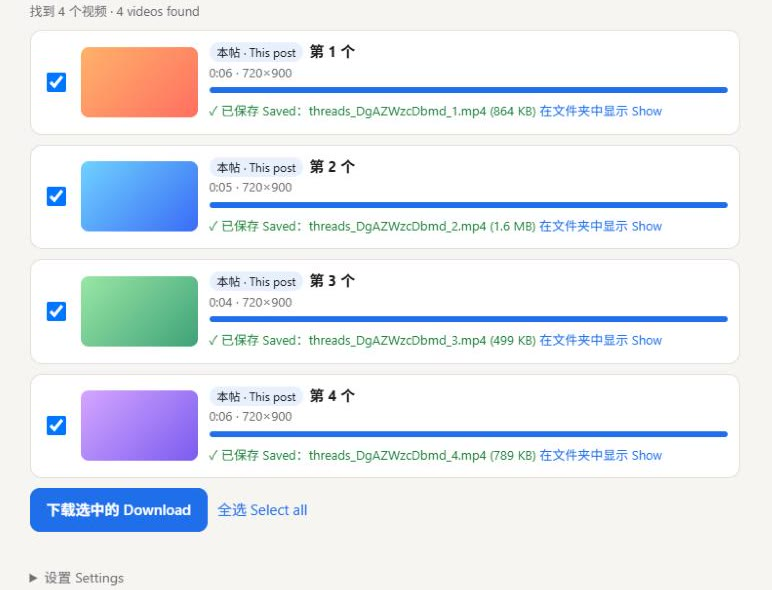

ClipSaver
贴个链接，把 X 和 Threads 的视频存下来。
一条帖子里有好几个视频、视频其实在被引用的帖子里，它都能分清楚。

Apple 芯片（M1 / M2 / M3 / M4）· 约 8 MB · 不用装别的东西
贴个链接，把 X 和 Threads 的视频存下来。
一条帖子里有好几个视频、视频其实在被引用的帖子里，它都能分清楚。
Apple 芯片（M1 / M2 / M3 / M4）· 约 8 MB · 不用装别的东西

x.com、twitter.com、threads.com、threads.net 的帖子链接，分享链接也行。
每个视频都有预览、时长和尺寸，想要哪几个就勾哪几个。
自动选最清楚的版本，也可以换小一点的。存下来是普通 mp4，有画面也有声音。
平时不用设置。网络不通时，在设置里填一个代理地址就行。
没有账号、没有历史记录，不上传任何东西。电脑上只多出你下载的视频。
没有窗口，Dock 里也不占图标，在浏览器页面里操作。关掉页面，它过一会儿会自己退出。
很多下载工具只抓页面上的第一个视频，结果下到回复、推荐，或者别人的视频。ClipSaver 只读这条帖子本身的数据，每个视频都标出来源：
帖子自己发的视频。默认勾选。
帖子引用了别人的帖子，视频在那条里面。帖子本身没有视频时会自动勾选。
藏在链接卡片里的视频，常见于广告。普通下载工具经常找不到。
点上面的按钮，下载 ClipSaver-macOS-arm64.dmg。
双击 dmg，把 ClipSaver 拖到旁边的 Applications 文件夹里。
这个软件没有付费给 Apple 签名，所以第一次打开时 Mac 会拦一下。点「完成」，然后打开 系统设置 → 隐私与安全性，往下找到 ClipSaver，点 「仍要打开」。之后就能直接双击打开了。
如果提示"已损坏，无法打开"，打开「终端」，运行下面这行再试：
xattr -cr /Applications/ClipSaver.app
浏览器会自动打开它的页面。
帖子里所有能下载的视频都会列出来。
视频保存在「下载」文件夹，文件名像 x_推文编号_1.mp4。点「在文件夹中显示」可以直接找到。
你的网络连不上 X 或 Threads。打开代理软件，在页面最下面的「设置」里填你的代理地址（代理软件里能看到，格式像 http://127.0.0.1:端口号），再试一次。
帖子里只有图片，或者是直播、YouTube 这类外链视频，这些下载不了。
帖子被删了、账号上了锁，或者要登录才能看。
页面放得太久了。重新点一下「查找视频」，再下载就行。